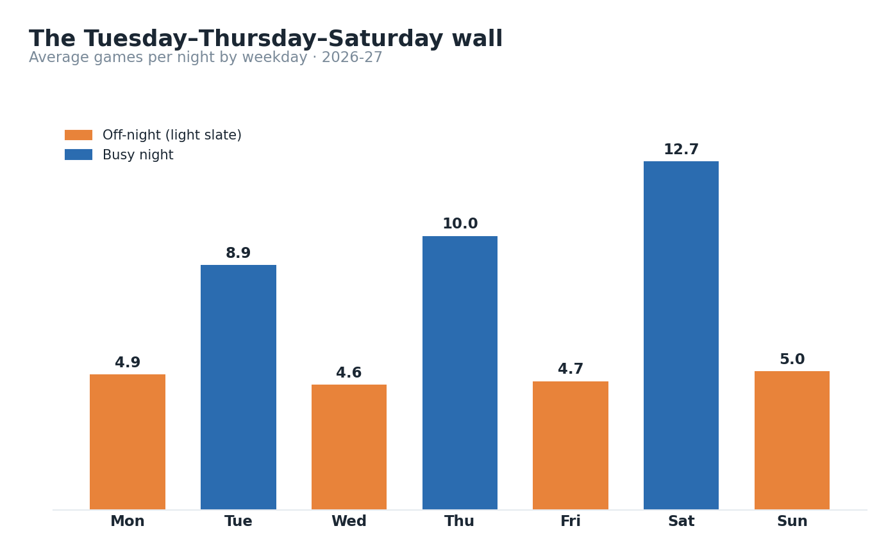
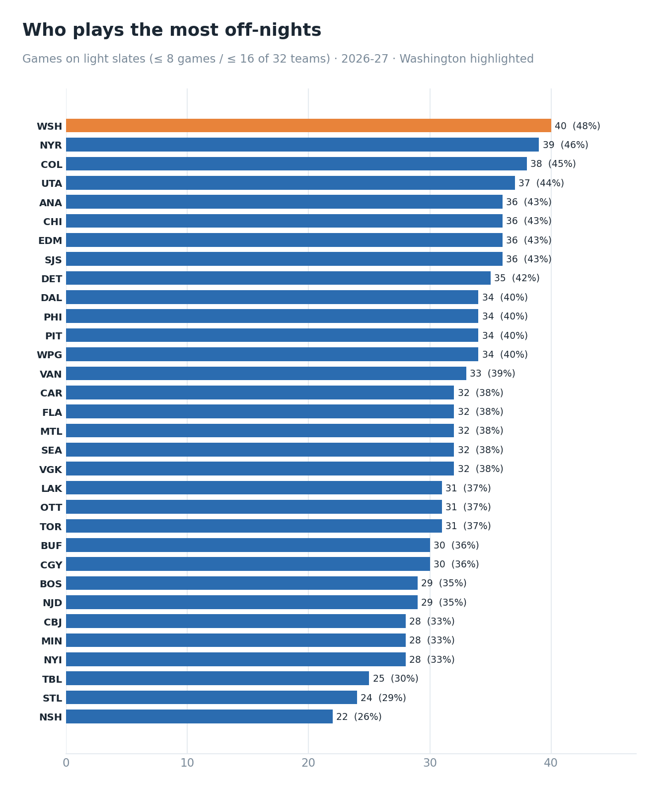
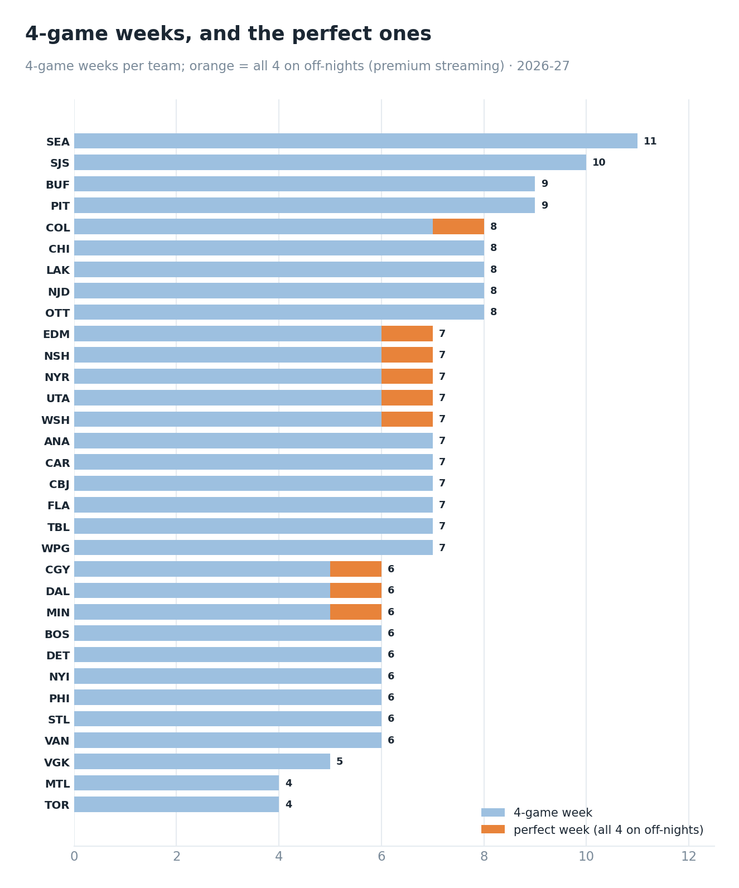
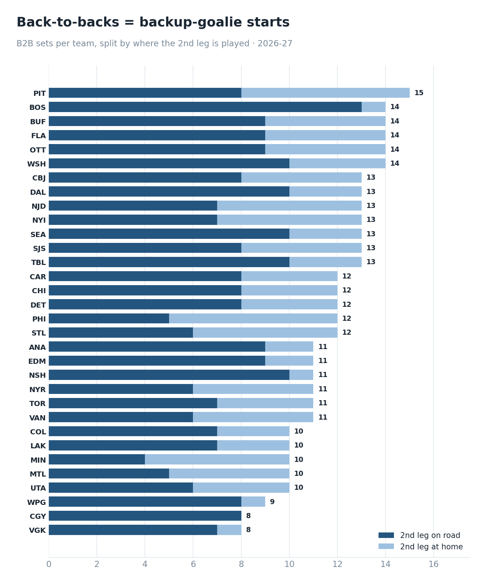
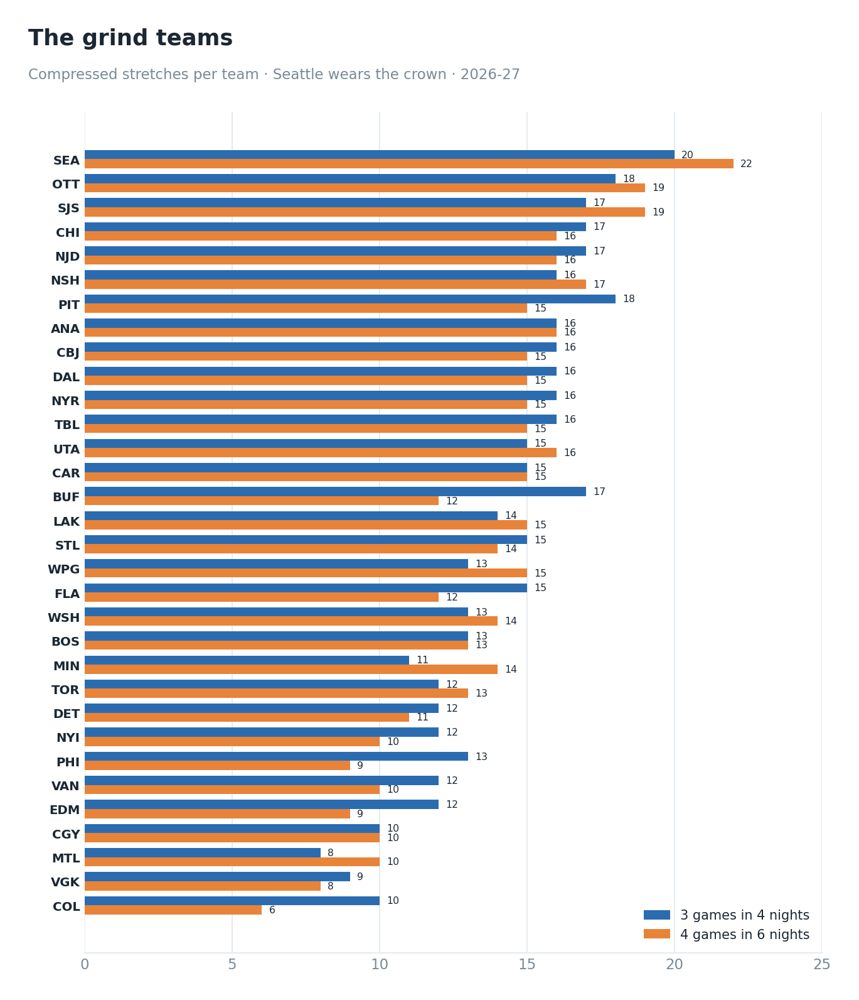
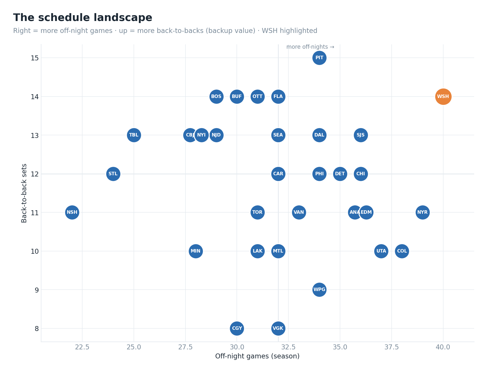
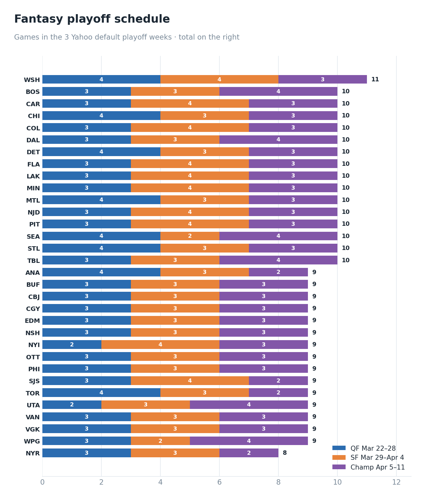
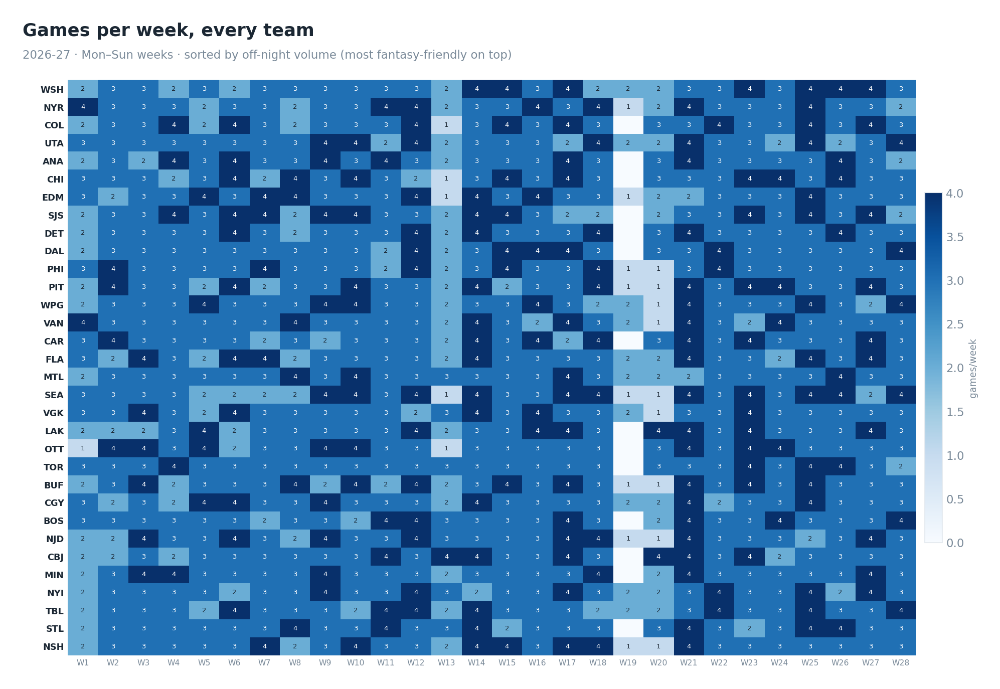

Talent wins your draft. When two players are dead even at the end of your board, the schedule is a real tiebreaker you get for free. Here is what the 2026-27 calendar hands the teams worth a small draft-day bump, pulled from the full slate game by game.
The league schedules in a rhythm. Saturday is the big night at almost 13 games, with Thursday and Tuesday heavy behind it. Then the floor drops out: Monday, Wednesday, Friday, and Sunday average about 5 games each. That split is the single most important thing in fantasy scheduling, because it decides how often you can actually get a player into your lineup. On a 13-game Saturday half your roster is already active and good players sit on your bench. On a 4-game Wednesday an extra skater on the ice is a start you would not otherwise get.

Washington plays 40 of its 84 games on off-nights, the most in the league at 48 percent of its schedule. The Rangers (39), Colorado (38), and Utah (37) sit right behind. On the other end, Nashville plays only 22 off-night games, with St. Louis (24) and Tampa Bay (25) close by, so their raw game counts flatter them. The draft angle is simple: with 2 skaters even on your board late, take the one whose team plays more off-nights. Over a season it is a dozen extra usable starts.

The purest version is a perfect week: a 4-game week where all 4 land on off-nights, so you get max volume and can start every one. There are 9 this season, and they belong to exactly the teams you would expect. Washington, Colorado, the Rangers, and Utah each draw one, along with Calgary, Dallas, Edmonton, Minnesota, and Nashville.

No team plays its starter on both ends of a back-to-back anymore, so the second night is where the backup gets the crease. Pittsburgh leads with 15 back-to-back sets. Boston, Washington, Buffalo, Florida, and Ottawa each have 14. Vegas and Calgary sit at the bottom with 8 apiece, so their backups will collect dust. One detail on Boston: 13 of its 14 second legs are on the road, the toughest possible spot for a backup.

Back-to-backs are only part of the fatigue story. Look at the denser stretches, 3 games in 4 nights and 4 games in 6, and Seattle stands alone as the grind team of the year, with Ottawa and San Jose close behind. Those clubs get worn down, which softens their stars on tired nights and hands their backups even more work. The old 3-games-in-3-nights cruelty is extinct: not a single team faces it all season.

Weight every game by how startable it is, counting an off-night game for more because you can actually use it, and each team's calendar collapses to a single number. Washington tops it, followed by the Rangers, Colorado, and Utah. The bottom is Nashville, St. Louis, and Tampa Bay again. This never outranks talent. It earns its keep at the margins of your roster, among the last few skaters, where a favorable schedule is the tiebreaker.

Playoff timing varies by league, so all 3 common windows are covered here. Most Yahoo leagues finish on the last 3 weeks: quarterfinals March 22 to 28, semifinals March 29 to April 4, and the championship April 5 to 11. Washington is the schedule champion in the 2 later windows, with 11 games in the standard setup and a league-best 12 if your league ends April 4. If your finals land earlier, March 22 to 28, Chicago takes over with 11 games and a ridiculous 8 of them on off-nights, Washington right behind. Across every scenario Washington finishes first or second, so it is the one team you can draft for the playoffs before you even know your league's exact dates.


The one-line version: talent wins your draft, but Washington has the best calendar in hockey this year start to finish, and the teams that play when nobody else does will quietly hand you more games than the box score suggests.